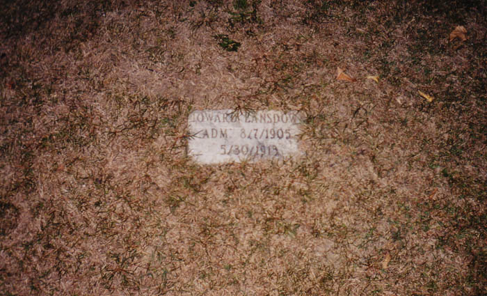
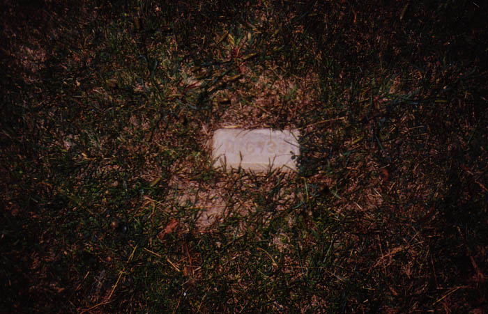
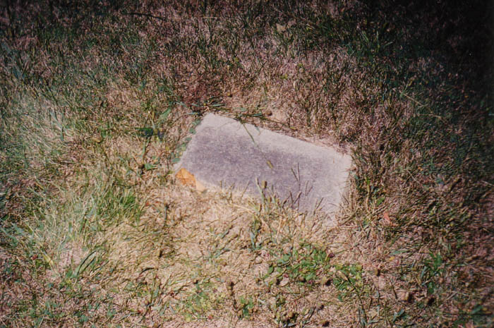
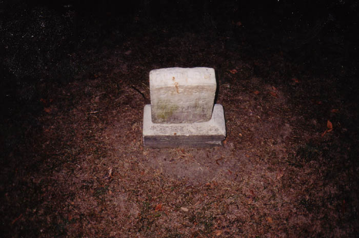
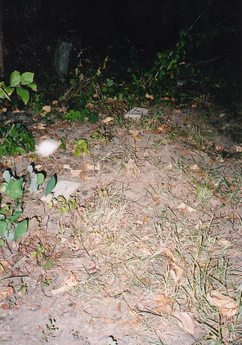

The least well-known of the old city cemeteries on Columbus's west side is the one on the grounds of the Columbus Developmental Center on Sullivant Avenue. I was told about this one a long time ago and had trouble finding it, mainly because hardly any of the stones are above ground. This cemetery is almost entirely ground-level plaques.


This cemetery must have been an intermediate, used between the one at Harper and McKinley and the TICO cemetery. The earliest burials here happened in 1906; a lot of the stones are dated from the nineteen-teens. Some are just numbers. There are a lot of "Unknown" stones here as well. Patients at the developmental center or the state hospital who died without family to pay for their burial got the simple, flat stones, but they aren't the only ones here; certain area residents who played a role at the institution were allowed a plot when they died, and their stones are more like the ones you'd see at an ordinary cemetery.

Below you see a photo of the cemetery, taken by Katie, which has a weird almond-shaped orb in it.

As I said, only a few of the tombstones in this field stick up above the ground at all. The graveyard itself is surrounded by a wooden fence, which we hopped. When we were there, two state cops who guard the grounds spotted my car and ran the plates and ended up giving us warnings. Written warnings, and that includes the girl I was with, who at the time was just a really pretty brunette I was trying to date. I didn't think they would cite us because Katie was distractingly hot--but these two blew my mind by doing it anyway, giving one to her along with me. It was very minor stuff, and the officers couldn't have been more considerate. After that they actually showed us around the rest of the grounds and told us about the current workings of the Developmental Center. I thank them and wish them nothing but the best.
TICO Cemetery
Harper-McKinley Cemetery
Back